Explore Edinburgh
A Brief History
Edinburgh grew from a hill fort on Castle Rock into Scotland's royal capital after David I founded Holyrood Abbey and burgh privileges along the Royal Mile in the twelfth century. Medieval parliaments, the Reformation, and the 1707 Union with England reshaped the Old Town closes while Enlightenment planners laid out the Georgian New Town from the 1760s. Courts, university buildings, and printers earned the city its nickname as the Athens of the North, and festivals now fill kirks and squares above the drained Nor Loch valley.
Attractions Map
Top Sights & Activities
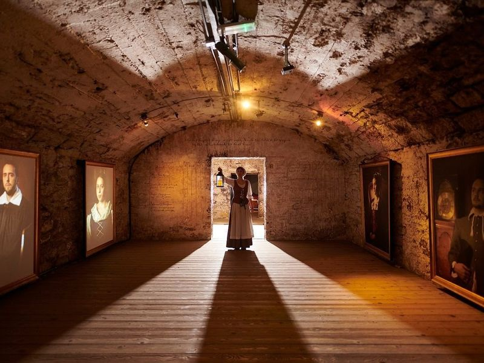
The Real Mary King's Close
The Real Mary King's Close is a fascinating underground museum located on the Royal Mile in Edinburgh, just a short distance from the Edinburgh Castle. This historical landmark offers immersive walking tours through hidden streets that provide insight into the lives of 17th-century residents. The close was once a bustling community but was mysteriously covered up, possibly to contain the spread of the plague.
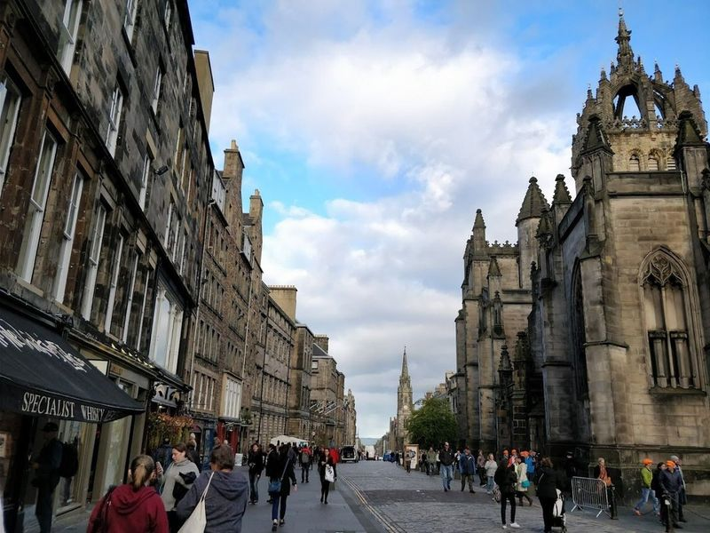
St Giles' Cathedral
St Giles' Cathedral, also known as the High Kirk of Edinburgh, is a grand Gothic medieval building and a Presbyterian place of worship. It was originally established in 854 but the present structure dates back to 1485. The cathedral is named after the city's patron saint and features a wide facade with Gothic windows, finials, and an unusual ventilated crown spire formed by eight flying buttresses.
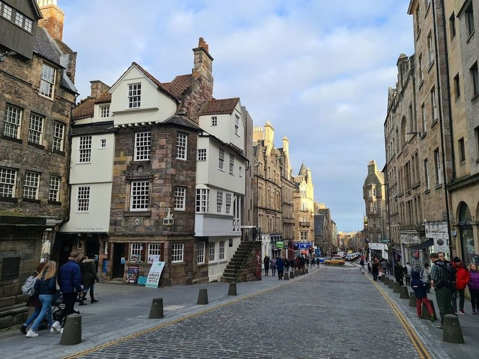
Royal Mile
The Royal Mile is a bustling street that connects Edinburgh Castle with Holyrood Palace, offering a mix of charming eateries, shops, and historic landmarks. This thoroughfare in the UNESCO-listed Old Town provides a sensory journey through Edinburgh's rich history and modern-day allure. Visitors can explore hidden alleyways, traditional pubs, and intriguing museums while enjoying street performances and storytelling sessions.
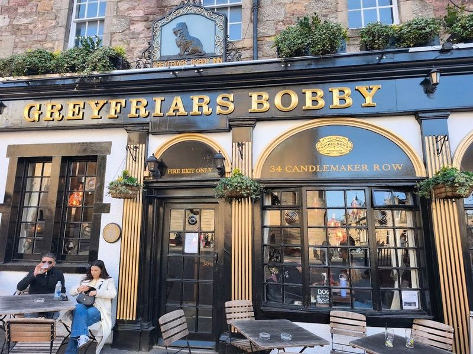
Greyfriars Bobby's Bar
Nestled in the vibrant heart of Edinburgh on Candlemaker Row, Greyfriars Bobby's Bar is a charming establishment steeped in history. This traditional pub, housed within a Georgian building since 1893, offers an inviting atmosphere where visitors can enjoy cask ales and delicious pub fare. The bar pays homage to the legendary Skye Terrier, Bobby, who famously kept vigil at his owner's grave for 14 years until his own passing in 1872.
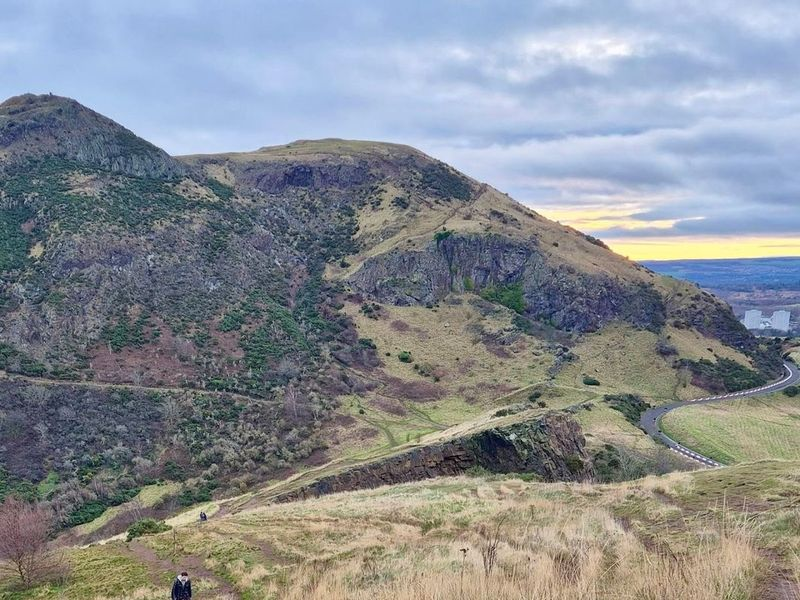
Holyrood Park
Holyrood Park is a parkland surrounding the slopes and crags of Arthur's Seat, offering walking and cycling paths as well as a picturesque loch. Visitors can enjoy various activities such as climbing Arthur's Seat for panoramic views, exploring Iron Age forts and Bronze Age agricultural terraces, visiting St. Anthony's Chapel ruins, greeting geese at Duddingston Loch, and fishing at Dunsapie Loch with a permit.
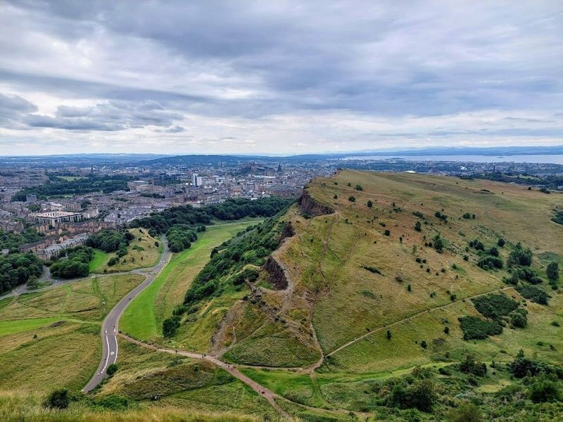
Arthur's Seat
Arthur's Seat, an landmark nestled in the heart of Edinburgh, is a must-visit for outdoor enthusiasts and nature lovers alike. This extinct volcano rises to 251 meters (823 feet) and offers a variety of hiking trails that cater to different skill levels, from moderate strolls to more challenging climbs. The ascent typically takes between 30 to 60 minutes, depending on your pace and stamina.
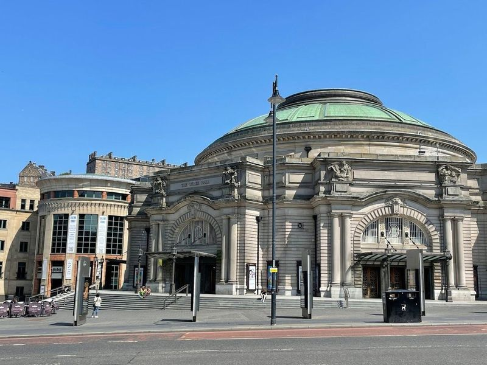
Usher Hall
The Usher Hall, located on Lothian Road in Edinburgh, is a renowned concert hall with a rich history. Built in 1914 by architects Stockdale Harrison and Howard H Thomson, it stands out with its beaux-arts-style architecture amidst the Victorian Gothic buildings of the city. The hall was funded by Andrew Usher, a prominent whisky distiller. Today, it is known as the home of the Royal Scottish National Orchestra and hosts various concerts and recitals.
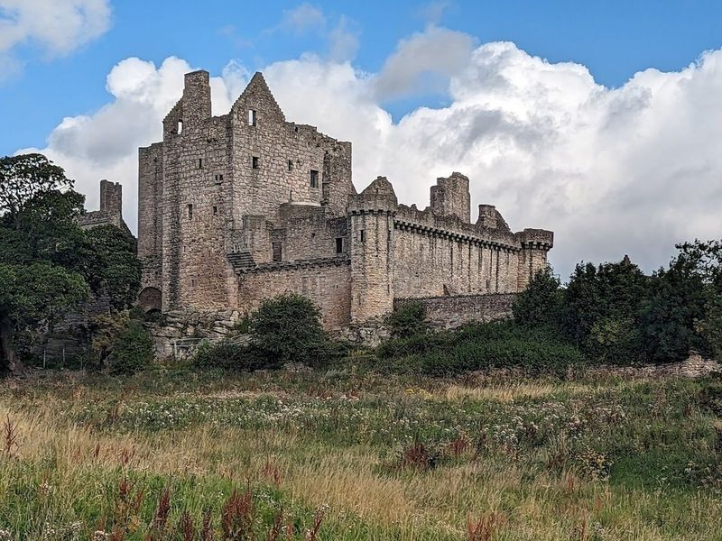
Craigmillar Castle
Craigmillar Castle is a well-preserved medieval fortress located in Edinburgh, Scotland. Often referred to as "Edinburgh's Other Castle," it holds significant historical importance and is a popular attraction for travelers. Built in the 14th century, the castle has served as a safe haven for Mary Queen of Scots before her imprisonment and as a place of recuperation after an illness following the birth of her son, James VI.
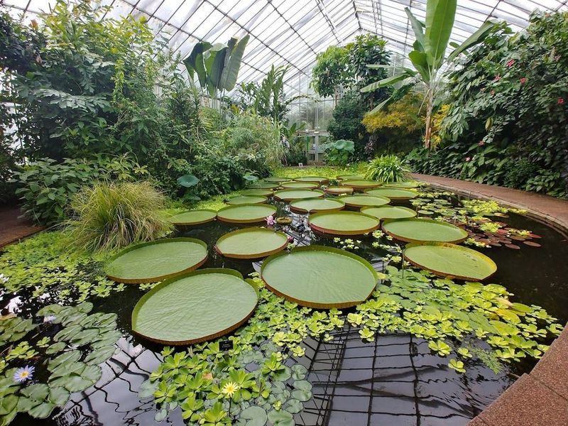
Royal Botanic Garden Edinburgh
The Royal Botanic Garden Edinburgh, established in 1670 and relocated to its current site in 1820, offers a serene escape from the city's hustle and bustle. The 70-acre garden features a palm house, temporary exhibitions, kids' events, tours, and dining options such as the Terrace Cafe with views of Edinburgh Castle. Inverleith House hosts a contemporary art gallery while the Rock Garden, Alpine Houses, and Woodland Garden are among its highlights.
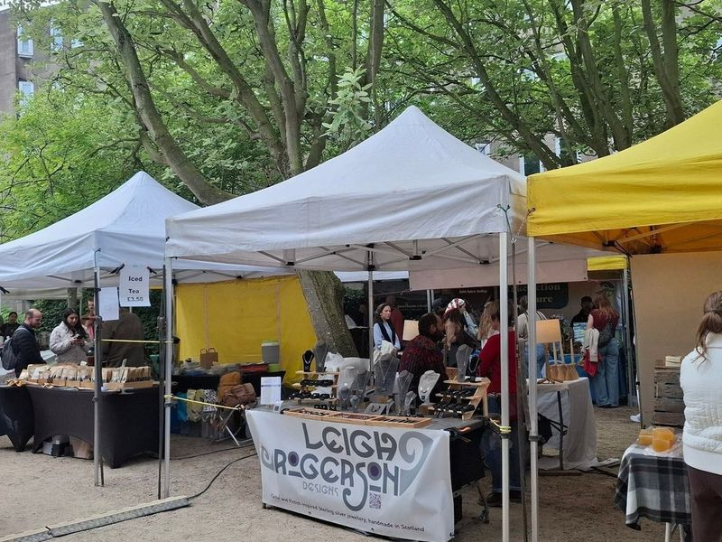
Stockbridge Market
Nestled along the picturesque banks of the Water of Leith, Stockbridge Market is a vibrant Sunday destination that celebrates local artisans and global flavors. This bustling market showcases an array of stalls offering everything from freshly baked bread and delectable pastries to mouthwatering street food.
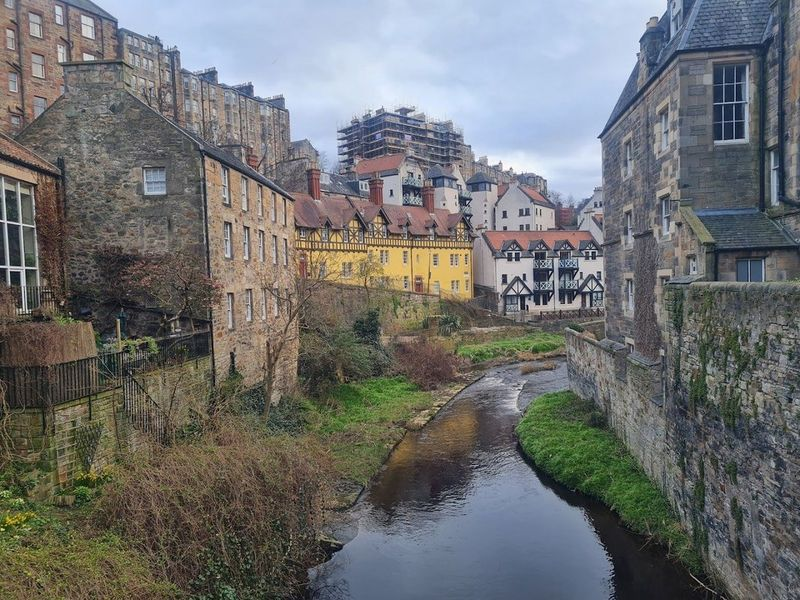
Dean Village
Nestled along a serene stream, Dean Village is a picturesque gem just northeast of Edinburgh's New Town. This charming enclave boasts lush gardens and 19th-century architecture, making it one of Scotland's most beautiful spots. A leisurely stroll along the Water of Leith Walkway reveals remnants of its milling history and leads you past the elegant St Bernard’s Well.
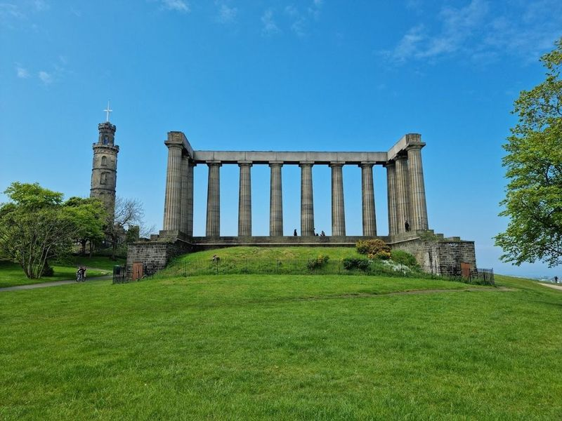
National Monument of Scotland
The National Monument of Scotland, situated atop Calton Hill in Edinburgh, is a neoclassical memorial dedicated to the soldiers and sailors from Scotland who lost their lives during the Napoleonic Wars. Designed by renowned architects William Playfair and Charles Robert Cockerell, this 19th-century landmark bears a striking resemblance to the Parthenon in Athens.
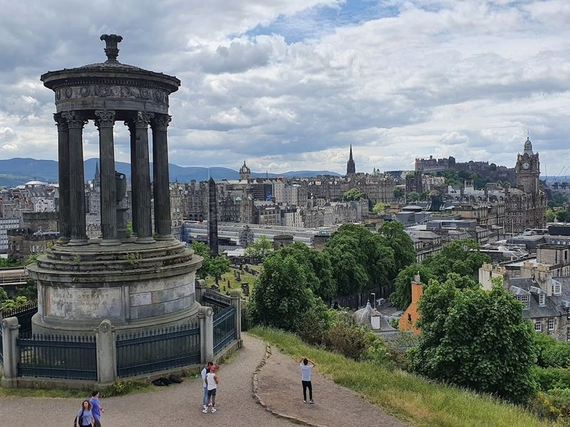
Nelson Monument
The Nelson Monument, located in Edinburgh, Scotland, is a towering tribute to Vice-Admiral Horatio Nelson's victory at Trafalgar. Designed by architect Robert Burn and completed in 1807, this commemorative tower stands at the highest point of Calton Hill. Its cylindrical shape resembles an upside-down telescope and offers a viewing platform at the top reached by climbing 143 steps.
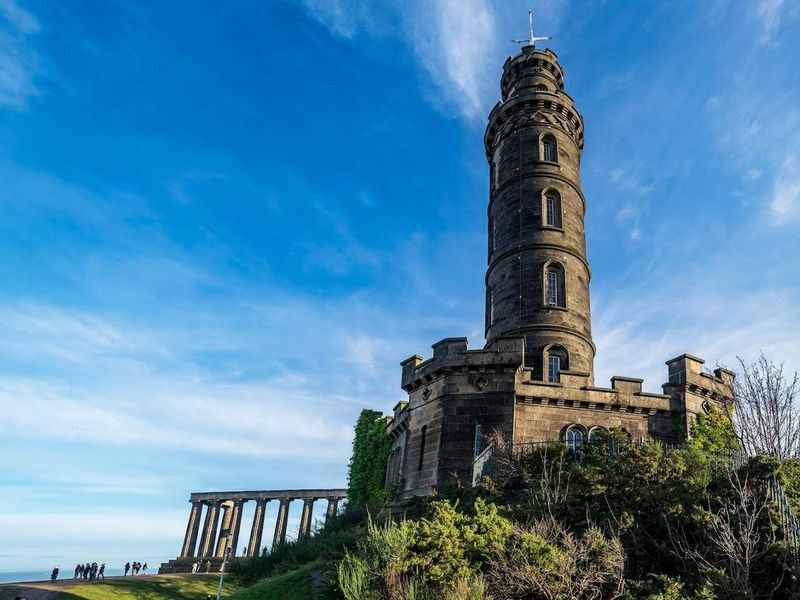
Calton Hill
Calton Hill is a must-visit destination in Edinburgh, renowned for its neoclassical monuments and panoramic views of the city skyline, including the Edinburgh Castle. Originally named Caltoun or Caldoun Hill, it was granted to the citizens of Edinburgh by James II in 1456.
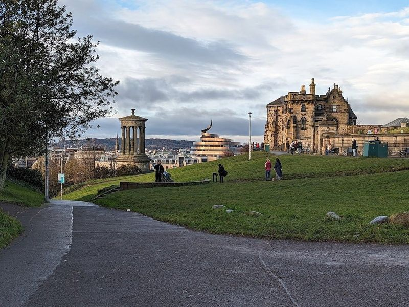
Dugald Stewart Monument
Perched atop Calton Hill in Edinburgh, the Dugald Stewart Monument is a striking tribute to the renowned Scottish philosopher, Dugald Stewart. Completed in 1831 and designed by William Henry Playfair, this monument resembles the Tower of the Winds in Athens. Stewart's contributions to Edinburgh University are commemorated through this structure, which offers panoramic views of the city and has become a popular subject for postcards and tourist brochures.
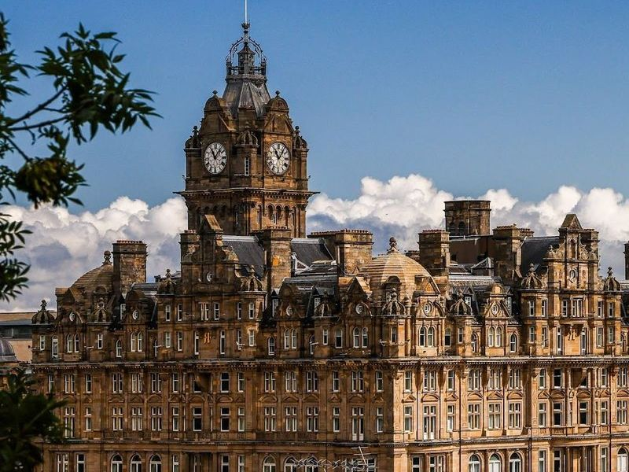
Scott Monument
The Scott Monument, a Gothic structure in Edinburgh's East Princes Street Gardens, pays tribute to the illustrious Scottish author Sir Walter Scott. As the largest monument dedicated to a writer globally, it features an impressive design by architect George Meikle Kemp. Visitors can ascend 287 steps to reach a viewing platform that offers panoramic views of the city and its architectural wonders.
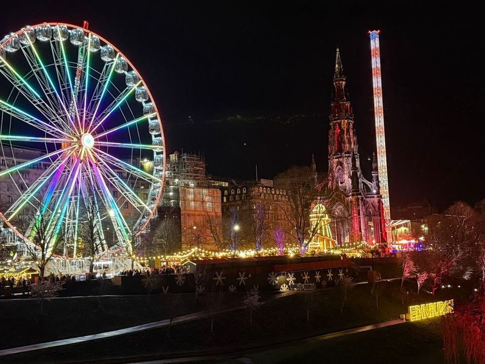
Princes St.
Princes St is a renowned shopping destination in Edinburgh, Scotland, featuring a variety of fashion brands, technology shops, hotels, and historic landmarks. The street is home to an array of dining options such as Amber Restaurant, Harvey Nichols Forth Floor Restaurant, and The Salisbury Arms. Visitors can also explore the Cathedral Church of St. Mary the Virgin designed by George Gilbert Scott on the western side of the city center.
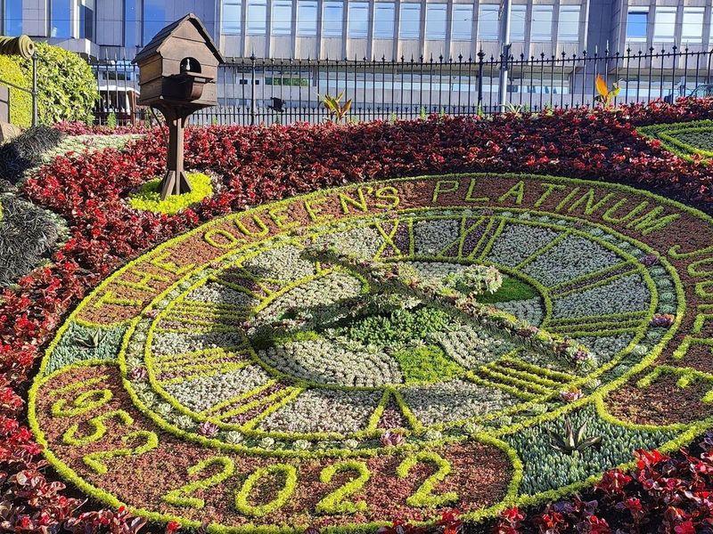
Princes Street Gardens
Princes Street Gardens is a renowned park in Edinburgh, situated along the main thoroughfare that separates the Old Town from the New Town. It holds historical significance as it was once part of the Nor Loch and features various public monuments and memorials. The gardens are a popular spot for picnics during summer, offering views of famous landmarks like the Scott Monument, a Gothic spire dedicated to Sir Walter Scott.
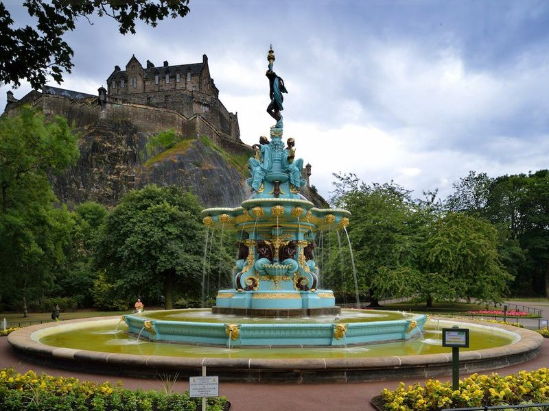
Ross Fountain
The Ross Fountain, located in the heart of Edinburgh's Princes Street Gardens, is a cast-iron fountain dating back to 1872. This neoclassical masterpiece represents science, arts, poetry, and industry. The fountain offers a picturesque backdrop with the impressive Edinburgh Castle towering over it. It is a popular spot for photographers and tourists seeking an ideal viewpoint of the city.
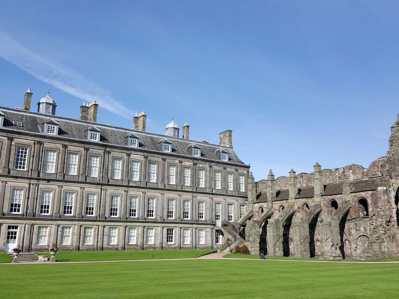
Palace of Holyroodhouse
The Palace of Holyroodhouse, a 16th-century residence of the Stuart monarchs, is not just an architectural marvel but also a treasure trove of history. As the official home of the British monarch in Scotland, it invites visitors to step into its royal apartments and admire exquisite antiques and relics. The throne room and great gallery are particularly captivating, while the ruins of Holyrood Abbey add an air of mystery steeped in political drama.
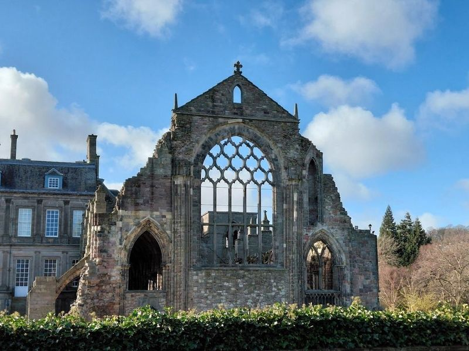
Holyrood Abbey
Holyrood Abbey is a 12th-century abbey located at the end of the Royal Mile in Edinburgh. The abbey offers free tours led by guides dressed in ancient hunting Stewart tartan, providing visitors with an immersive experience. Adjacent to Holyrood Abbey is Holyrood Palace, which has been a principal residence for Scottish royalty since the 16th century and currently serves as the official residence of Queen Elizabeth II in Scotland.
Scottish Parliament Building
The Scottish Parliament Building, located at the bottom of the Royal Mile, is a striking modern structure with a unique design. The interior features oak and granite elements and offers guided tours when available. The exterior showcases a blend of Scottish history and culture, with features like the Canongate Wall adorned with quotes from local writers.
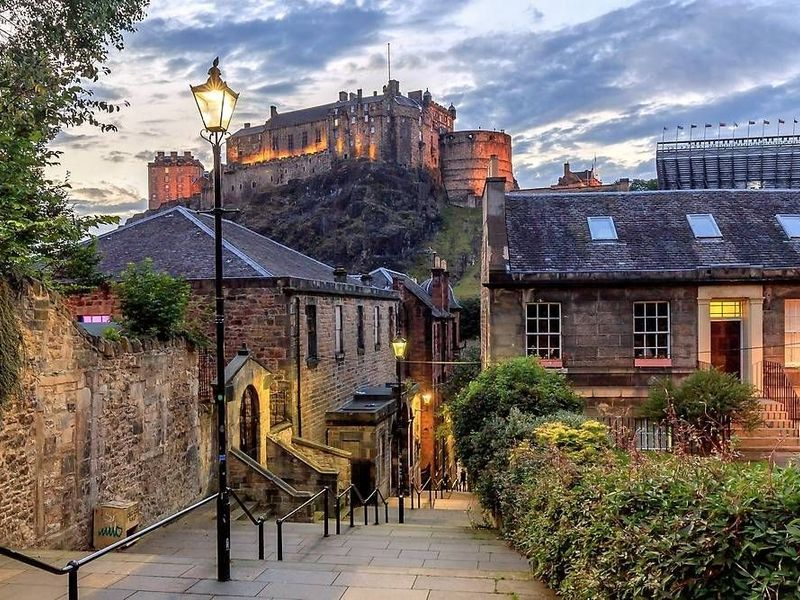
The Vennel Viewpoint Edinburgh Castle
The Vennel Viewpoint in Edinburgh is a picturesque spot nestled between historic tenement buildings, offering a view of the Edinburgh Castle. This narrow alleyway near the Grassmarket leads to the Cowgate and is steeped in medieval history. The vantage point provides an Instagram-worthy perspective of the castle, making it a must-visit for photography enthusiasts.
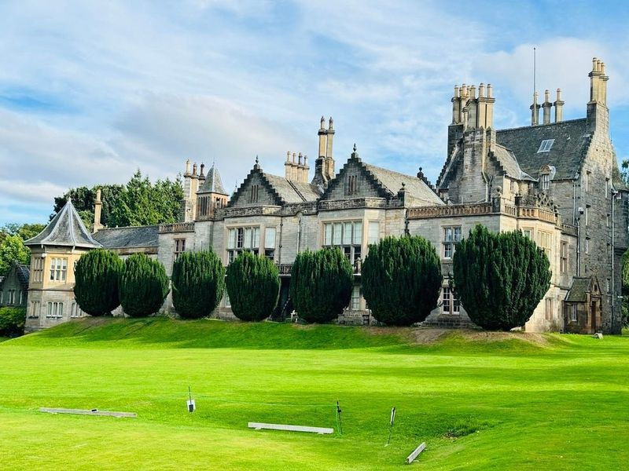
Lauriston Castle
Lauriston Castle and Gardens is a hidden gem in Edinburgh, offering a glimpse into the past with its 16th-century tower house adorned with Georgian and Edwardian additions. Once home to Mr. and Mrs. W.R. Reid, this beautifully preserved castle showcases the opulent Edwardian interior design that the family bestowed upon it during their residency until 1926 when it became a museum.
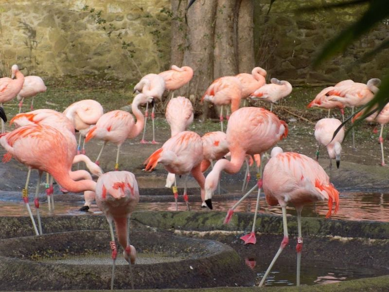
Edinburgh Zoo
Edinburgh Zoo is a large parkland zoo that offers a variety of experiences for visitors. It has keeper talks, hands-on animal encounters, and free hilltop safari rides. The zoo is praised for its diverse selection of animals and pleasant scenery, although it can get busy during peak times. Visitors can see happy animals such as sloths and koalas, and may even catch feeding time for the sloths up close.
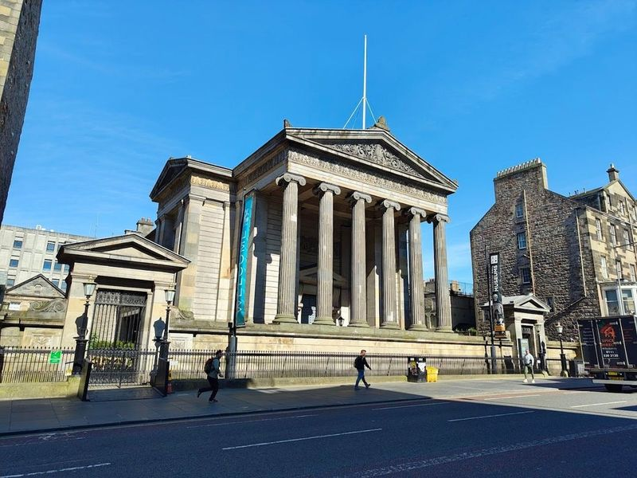
Surgeons' Hall Museum
Surgeons' Hall Museums, located in a classical 1832 building in the Old Town, offer a fascinating exploration of the history of medicine and the University of Edinburgh's significant contributions. The museum houses three distinct sections: Wohl Pathology Museum, History of Surgery Museum, and Dental Collection. Visitors can delve into the city's role in medical innovations like anaesthetics and antiseptics while learning about notable figures such as the inspiration for Sherlock Holmes.
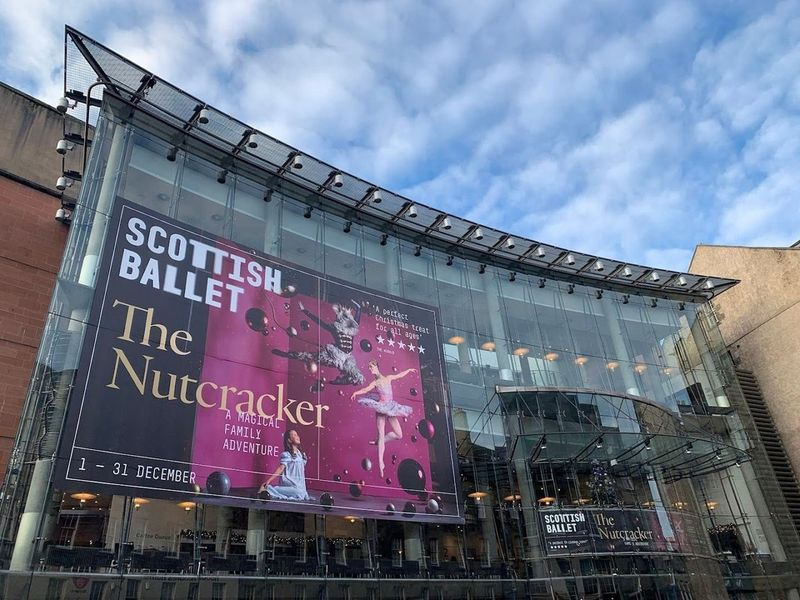
Festival Theatre
Festival Theatre in Edinburgh is a vibrant cultural hub that showcases a diverse range of performances, including national opera and ballet shows, touring productions, and comedy acts. The venue has gained acclaim as Scotland's largest stage since its establishment in 1994. With a seating capacity of 1,915 and a glass-adorned foyer, the theatre offers an immersive experience for art enthusiasts.
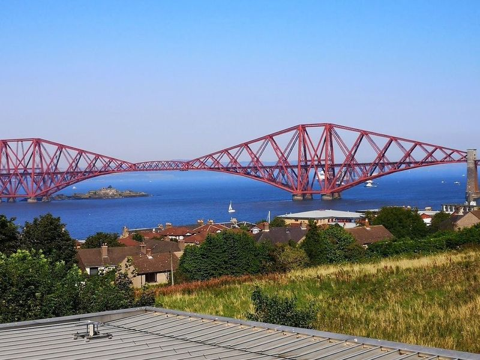
Forth Bridge
The Forth Bridge, an 1.5-mile-long railway marvel that opened its doors in 1890, gracefully spans the Forth estuary and serves as a backdrop for exploration. Surrounding this engineering wonder are 40 captivating short walks that invite adventurers to traverse the Kingdom of Fife.
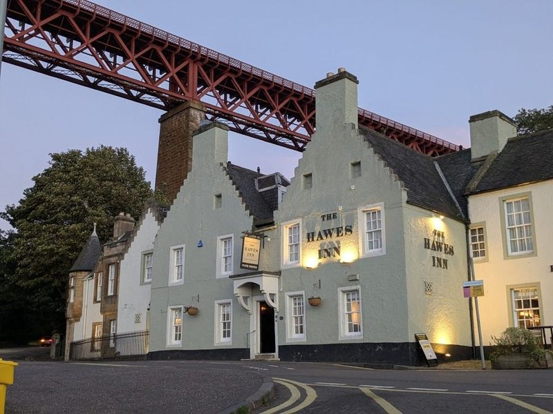
The Hawes Inn
The Hawes Inn is a charming waterfront establishment located in South Queensferry, offering traditional guestrooms with rustic details and a classic pub featuring a cozy fireplace. Nestled against the picturesque backdrop of the Three Bridges and Firth of Forth, this inn provides a delightful setting for visitors to relax and enjoy their stay. The nearby area boasts various dining options, including an informal restaurant with a contemporary take on traditional pub fare.
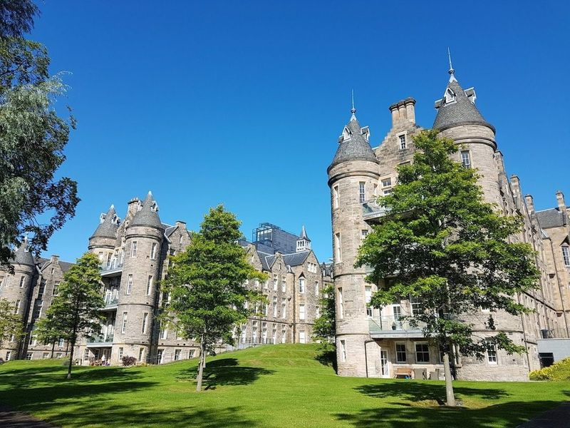
The Meadows
The Meadows is a popular public park located in the southern edge of Edinburgh's Old Town, known for its flat expanse that attracts joggers, sports teams, and sunbathers. The park features various facilities such as children's playgrounds, sports pitches, tennis courts, a putting green, and a pavilion cafe. It is also home to the annual summer fair and hosts events like the Edinburgh Festival in August.
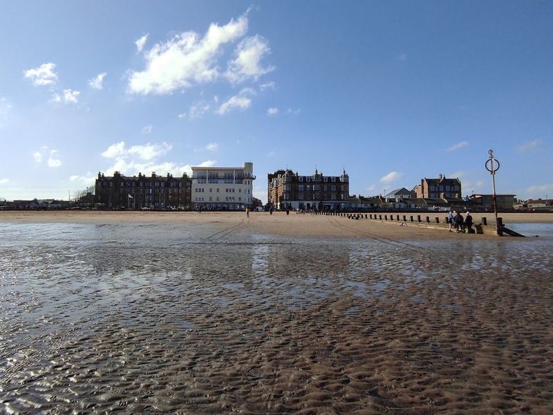
Portobello Beach
Portobello Beach, located near Edinburgh along the Firth of Forth, offers a classic seaside experience with its sandy stretches and elegant promenade featuring Georgian and Victorian architecture. The area is home to the historic Portobello Swim Centre, which boasts a Victorian swimming pool complete with an original Aerotone (jacuzzi) and Turkish baths. Visitors can also explore the charming old Victorian buildings along the 2-mile long beachfront promenade.